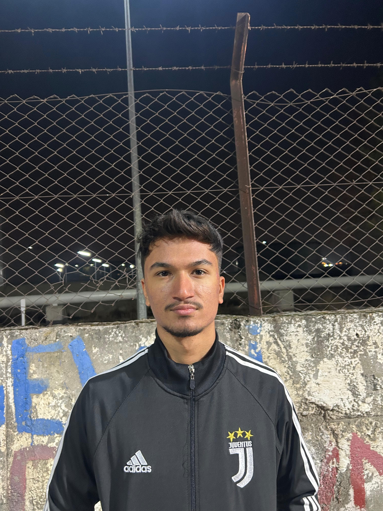

Ana Sayfa
Hakkında
Projelerim
Hobilerim
İletişim
Hakkında

Melih Yalavaç Hakkında
Melih Yalavaç 19 Şubat 2005 Mersin doğumlu Batman Üniversitesi Bilgisayar Mühendisliği Bölümü öğrencisi, programlama, yazılım ve donanım üzerine çalışmalar yapıyorum.